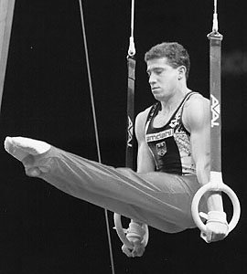

Valery Belenky (USSR/GER)
1992 Olympic AA Bronze Medalist
1997 World
PH Champion

Medal Total
- Olympic Games: 1 Gold, 1
Bronze
European Championships:
1 Silver
- World Championships: 3
Gold, 3 Bronze
- World Cup: 4 Gold, 2
Silver, 1 Bronze
Valery was born in Baku on
September 5, 1969. He competed for the USSR/CIS team through 1992, and was
affiliated with the Army Club. In
1994 became a German citizen. His coach was Anatoly Yarmovsky (both in
Baku and in Stuttgart).
Competition Results
- 1987
Jr. Friendship Tournament (Druzhba): 1st Team, 5th AA, 1st PH
1988
- Chunichi Cup: 6th AA, 2nd FX, 2nd V, 4th PH, 5th R
- DTB Cup: 4th AA, 1st PB, 2nd FX, 2nd R, 4th V,4th PH, 5th
HB
- Tokyo Cup: 1st PH, 1st V, 2nd FX
- USSR Cup: 11th AA, 5th FX, 6th V
-
- 1989
- Chunichi Cup: 1st AA
- DTB Cup: 3rd AA, 1st PH, 1st V, 1st PB
- Leningrad International: 2nd AA, 1st PH, 1st
R, 1st PB, 2nd FX, 4th V
Tokyo Cup: 1st PH, 1st PB
- USA-USSR Dual Meet: 1st AA
USSR Championships: 2nd AA
- USSR Cup: 5th AA, 3rd R
-
- 1990
- DTB Cup: 1st AA, 1st R, 1st PB, 2nd FX, 2nd PH, 6th V
- Dutch Open: 1st AA, 1st PH, 1st R, 1st V, 1st PB
- Gander Memorial: 2nd AA
Goodwill Games: 1st Team, 2nd AA, 1st R, 1st PB, 3rd V
Swiss Cup: 1st Team
USA-USSR Dual Meet: 1st Team, 2nd AA
USSR Championships: 2nd AA
USSR Cup: 4th AA, 1st V, 1st R, 3rd FX
- World Cup: 1st AA, 1st R, 1st PB, 1st HB, 2nd FX,
2nd PH, 3rd V
World Stars: 1st AA, 2nd FX, 2nd PH, 2nd R, 2nd V
-
- 1991
- Blume Memorial: 3rd AA
- GER-USSR-CHN Tri-Meet: 2nd AA
- Moscow World Stars: 4th AA, 1st V, 1st PB
- USSR Championships: 7th AA
- USSR Spartakiade: 4th AA
- World Championships: 1st Team, 1st
PH
-
- 1992
- CIS Championships: 4th AA, 1st PH
- Cottbus International: 2nd AA, 1st FX, 1st R, 1st PB, 2nd
HB, 3rd V
- DTB Cup: 6th AA, 2nd R, 2nd PB
- Gander Memorial: 3rd AA
- Moscow World Stars: 5th AA
- Olympic Games: 1st Team, 3rd AA, 5th R,
7th PH
- Swiss Cup: 3rd Team
- World Championships: 3rd PB, 9th
PH
-
- 1993
- Birmingham Classic: 5th AA, 2nd PB
Cottbus International: 5th AA
- DTB Cup: 1st V, 3rd FX, 4th R, 4th HB, 7th PB
- Kosice International: 3rd AA, 1st PH
Medico Cup: 1st AA, 1st V, 1st PB, 2nd R
- World Championships: 3rd PB,
8th V
-
- 1994
- DTB Cup: 1st PH, 3rd R, 4th V, 7th PB
- European Championships: 5th AA, 5th PB, 7th V
- Swiss Cup: 1st PH, 5th R, 5th V, 7th FX
- World Championships (Brisbane): 4th AA, 3rd R,
7th PH
- World Championships (Dortmund): 5th Team
-
- 1995
- Cottbus International: 5th FX, 5th PH, 5th R, 7th V
- DTB Cup: 2nd PH, 3rd V, 5th R, 7th FX, 8th PB
- French International: 3rd AA, 3rd R, 5th PH, 6th FX
- Gander Memorial: 2nd AA
- World Championships: 5th AA
World Stars: 3rd AA, 1st R, 2nd PB
1995
European Cup: 2nd AA, 1st PH
- 1996
- American Cup: 5th AA
- Cottbus International: 2nd PB, 3rd PH, 6th FX
- European Championships: 4th PB, 5th R
- German Championships: 2nd AA, 4th R, 5th FX, 7th V
- Olympic Games: 6th AA
- Swiss Cup: 1st PH, 4th PB, 5th R, 6th V, 8th FX
- Three-on-Three International: 12th Team
- World Championships (San Juan): 7th V, 8th PB
-
- 1997
- American Cup: 3rd AA
- GER-AUS Dual Meet: 1st Team, 12th AA
- GER Championships: 1st PH, 1st R, 1st PB
- Messe Cup: 3rd Team
- Three-on-Three International: 7th Team
- World Championships: 6th Team, 1st PH,
4th R
1998
European Championships: 2nd R, 6th PH, 6th PB
Samboo Cup: 2nd R, 3rd PH
1999
GER-BLR-SUI Tri-Meet: 6th AA
World Championships: 6th PH
-
This page was created on April 19, 1997 and was last
updated on August 25, 2007.
© Gymn Forum